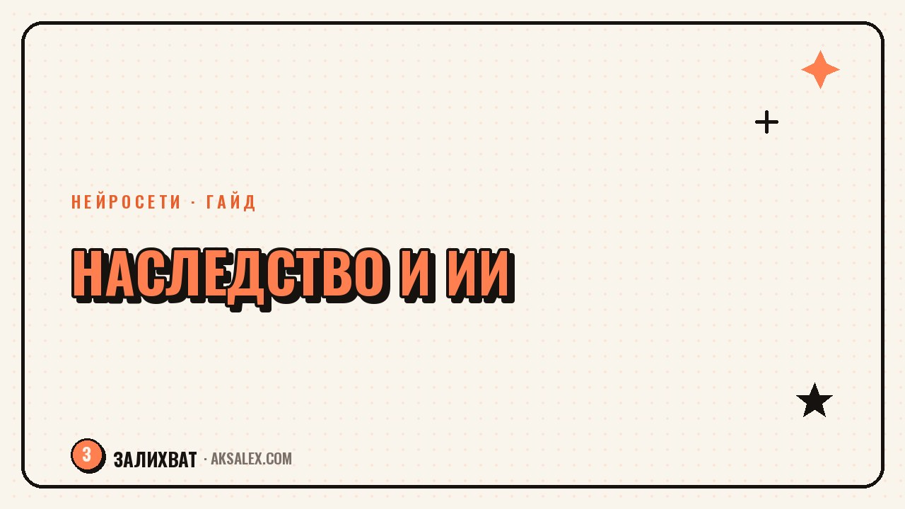

Нейросети для наследства: документы, сроки и права

Когда умирает близкий человек, последнее, на что хочется тратить силы, - это разбор бумаг и сроков. Но наследство устроено так, что пропущенный срок или неправильно собранный пакет документов может стоить тебе квартиры или вклада. Нейросети не заменят нотариуса и не примут решение за суд, но снимают часть нагрузки: помогают разобраться в терминах, составить список документов и подготовиться к разговору с нотариусом без паники.
С чего начинается работа с нейросетью в наследственном деле
Первый шаг - не юридическая консультация, а перевод ситуации на понятный язык. Ты открываешь чат с нейросетью и описываешь ситуацию своими словами: кто умер, когда, осталось ли завещание, какое имущество предположительно есть, кто ещё претендует на наследство. Чем конкретнее описание, тем полезнее ответ.
Дальше попроси разложить ситуацию по пунктам: какие сроки действуют, какие документы нужны на этом этапе, к кому обращаться. Нейросеть соберёт общую схему по закону, но каждое дело индивидуально - долги умершего, спорное имущество, наследники за границей всё меняют. Финальную схему стоит проверить у нотариуса, а нейросеть использовать как черновик.
Какие вопросы задавать в первую очередь
- Какой у меня срок, чтобы вступить в наследство, и с какой даты он считается
- Какие документы нужны для обращения к нотариусу на моём этапе
- Как рассчитать мою долю, если наследников несколько
- Что делать, если я узнала о смерти позже установленного срока
- Какие расходы меня ждут при вступлении в наследство
Разбор документов: что и зачем собирать
Самая муторная часть дела - сбор бумаг. Свидетельство о смерти, документы на имущество, выписки из ЕГРН, справки о прописке, иногда бумаги из другого города. Нейросеть помогает составить личный чек-лист под твою ситуацию: ты описываешь, что уже есть и что предстоит наследовать, а в ответ получаешь структурированный список с пояснением, где и как получить каждую бумагу.
Отдельно полезно просить объяснить непонятные формулировки из ответов нотариуса. Юридический язык часто пугает сильнее, чем сама ситуация. Фразу вроде «открытие наследства производится по месту последнего постоянного места жительства наследодателя» можно попросить перевести на обычный язык - и станет ясно, что речь всего лишь о том, куда нести документы.
| Документ | Где получить |
|---|---|
| Свидетельство о смерти | ЗАГС по месту смерти |
| Выписка из ЕГРН | Росреестр, МФЦ, Госуслуги |
| Справка о прописке умершего | Паспортный стол, МФЦ |
| Завещание (если есть) | У нотариуса, в реестре завещаний |
| Документы на имущество | Хранятся у наследников |
Сроки, которые нельзя пропустить
Основной срок для вступления в наследство в России - шесть месяцев со дня смерти наследодателя. Если за это время наследник не подал заявление нотариусу, срок можно восстановить только через суд и только при наличии уважительных причин. Нейросеть удобно использовать как напоминалку: вводишь дату смерти, а она считает ключевые даты и предупреждает, сколько времени осталось.
Я узнала о смерти отца с опозданием на четыре месяца - жили в разных странах. Нейросеть помогла быстро понять, что срок ещё не упущен, и собрать список документов для подачи заявления в оставшиеся два месяца.
Что делать, если срок почти истёк
- Срочно подать заявление нотариусу - даже без полного пакета документов
- Параллельно донести недостающие бумаги - нотариус обычно даёт на это время
- Если срок пропущен, собрать доказательства уважительной причины для суда
- Проконсультироваться с юристом, если среди наследников есть несогласные стороны
Споры между наследниками: подготовка к разговору
Наследственные споры редко бывают только про деньги - в них много старых обид между родственниками. Нейросеть не рассудит спор, но поможет подготовиться к сложному разговору: собрать аргументы, сформулировать позицию спокойно и продумать вопросы юристу или медиатору заранее.
Хороший приём - попросить нейросеть сыграть роль второй стороны и проговорить разговор заранее. Так можно составить и нейтральное письмо родственникам с предложением распределить имущество или назначить встречу у нотариуса - без эмоционального перегруза.
Темы, в которых помогает такая подготовка
- Формулировка своей позиции по спорному имуществу
- Составление письма или сообщения наследникам
- Список вопросов для встречи у нотариуса
- Разбор вариантов раздела имущества: продажа, выкуп доли, совместное владение
Где нейросеть не поможет и когда нужен живой юрист
Нейросеть не имеет доступа к базам нотариальных контор, не видит реестр наследственных дел и не подтвердит, что ты действительно наследница. Она не несёт ответственности за совет и может ошибиться в деталях конкретного региона. Финальные шаги - подача заявления, оформление права собственности, судебные споры - всегда идут через нотариуса или суд.
Нейросеть лучше всего работает на подготовительном этапе: разобраться в терминах, собрать черновой список документов и подготовиться к разговору со специалистом так, чтобы не тратить его оплачиваемое время на вопросы, которые можно было разобрать заранее.
| Задача | Нейросеть | Нотариус |
|---|---|---|
| Разобраться в терминах | Да, быстро | Объяснит на приёме |
| Список документов | Черновик | Официальный список |
| Подать заявление | Нет | Да, лично |
| Подтвердить право на наследство | Нет | Да |
| Разрешить спор между наследниками | Подготовит | Да, суд или медиация |
Частые вопросы
Может ли нейросеть заменить нотариуса при оформлении наследства
Нет, нотариус - обязательное звено, через которое проходит открытие дела и выдача свидетельства о праве на наследство. Нейросеть лишь помогает разобраться в терминах и подготовить документы заранее.
Какой срок для вступления в наследство в России
Общий срок - шесть месяцев со дня смерти наследодателя. Если срок пропущен, его можно восстановить через суд при уважительной причине, но процесс станет дольше.
Как нейросеть помогает собрать документы на наследство
Ты описываешь ситуацию - какое имущество наследуется, сколько наследников, есть ли завещание - и получаешь чек-лист документов с пояснением, где их получить. Это черновик, который стоит уточнить у нотариуса.
Стоит ли доверять нейросети в спорных наследственных делах
Доверять стоит только как источнику подготовки: сбор аргументов, формулировка позиции, список вопросов юристу. Решение по спору принимает медиатор или суд.
Можно ли узнать через нейросеть, есть ли у меня право на наследство
Нейросеть не имеет доступа к реестрам, поэтому точно подтвердить право она не может. Она подскажет общую очерёдность наследников по закону, а итоговый ответ даст нотариус.
Раз тема оказалась полезной, вот что почитать следующим. Разбираем, как устроен вечнозелёный контент для блога: какие темы работают годами и как собрать такие статьи с помощью нейросетей.
Читать статью →а не вручную